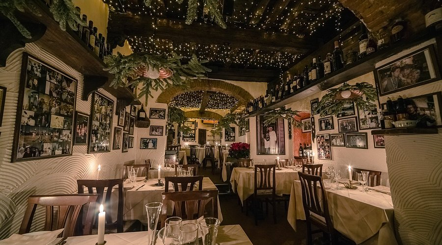
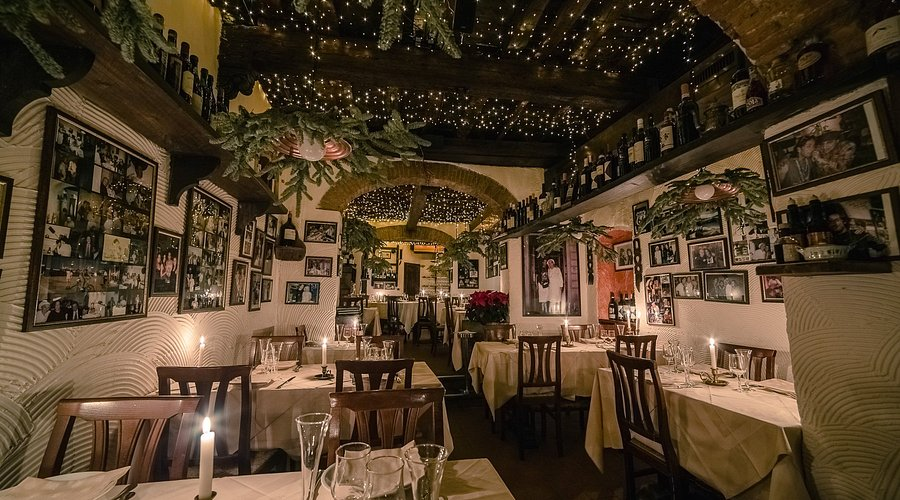
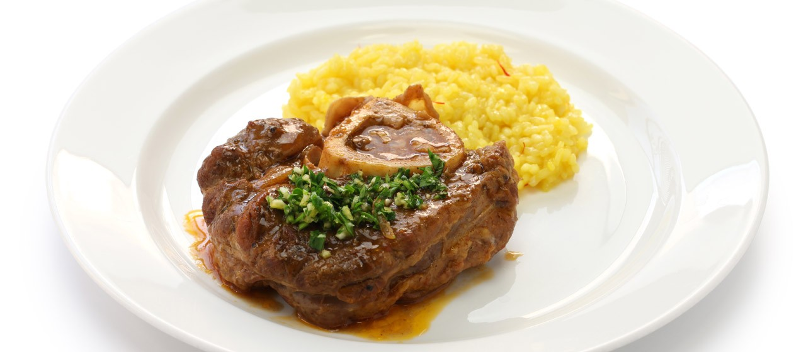

맛집
이탈리아 필수 코스!
이탈리아 여행에서 빠질 수 없는 게 바로 맛있는 음식이죠!🍴
오늘은 그중에서도 “여기서 이 메뉴는 꼭 먹어야 한다!” 싶은 두 가지를 소개해볼게요.
그럼 맛있는 이야기 시작해볼까요?
첫 번째 음식은… 피렌체의 비스테카 알라 피오렌티나!🍖
피렌체에 가면 꼭 먹어봐야 하는 시그니처 메뉴예요.
두툼하고 육즙 가득한 티본 스테이크인데,
한입 먹으면 정말 감탄 나오는 맛… 🥹
 

- 최소 1kg 이상! 도전하는 재미까지 있는 메뉴
- 겉은 바삭, 속은 촉촉한 미디엄 레어 굽기가 정석
- 와인이랑 같이 먹으면 행복도 200% 상승 🍷
✔ 추천 맛집 두 곳
- Trattoria ZaZa – 분위기도 좋고 음식도 맛있어서 항상 줄 서 있는 인기 맛집
- La Giostra – 로맨틱하고 감성 있는 분위기, 데이트 코스로도 완전 찰떡!
피렌체에서 고기 먹을 거면 이 두 곳은 진짜 강추예요.
“오늘은 스테이크로 제대로 한 끼!” 하고 싶을 때 꼭 가보세요.🥹
두 번째 맛은… 밀라노의 오소부코 & 밀라노식 리소토!🍛
두 번째로 소개할 맛은 밀라노의 대표 메뉴 조합이에요.
샤프란 향이 은은하게 올라오는 노란 리소토와
부드럽게 뭉개지는 오소부코(송아지 정강이 스튜)의 조합은 정말 완벽해요… 🤤


- 사프란 특유의 향 덕분에 깊고 고급스러운 풍미 🌼
- 오소부코는 살이 부들부들해서 숟가락으로도 잘 떠짐 😭
- 리소토 + 오소부코 조합은 “밀라노 현지 맛 그대로”를 느낄 수 있는 완벽한 한 접시
✔ 추천 맛집 두 곳
- Galleria Restaurant – 두오모 옆 갤러리아 내부에 있어 뷰까지 완벽한 곳
- Trattoria Milanese – 전통 방식 그대로 만드는 정통 밀라노식 맛집
밀라노에서는 이 두 메뉴를 먹어보면 여행의 질이 한 단계 올라가는 느낌이 들어요.
피렌체의 육즙 폭발 스테이크부터, 밀라노의 향긋한 리소토까지…🥰
이 두 메뉴만 먹어도 이탈리아가 왜 “미식 천국”이라는 말이 나오는지
바로 이해될 거예요!